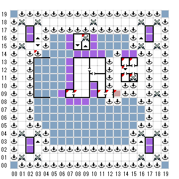

【 x：3，y：14 】
一回まで落っこちた！（1F 3,14）
【 x：7，y：9 】
二つのボタンがある
B と C という印がついている
どちらを押すか？（Enterを押せばどちらも押さないことになる）
Bは2Fの6,9
Cは3Fの7,9
【 x：8，y：9 】
待て！ この先は、汝が その運命を
アミュレットの中に見出す決心なくば、
進むことはできぬ！
これが汝の望みか（Y/N）
Y
ならばこの入り口を守りたる
この我らを倒してみせるがよい！
戦闘
【 x：9，y：16 】
サインする？でY
RING
N
”我ら地獄までも、その悪魔のごとき尊大さと
共にあらん！そういいながらエルズベス・
キーフ女男爵が、手を振り、君をこれから進む
べき道へと送り出した。
＞地下9階の９，１０（地獄の門の前）に飛ばされる
【 x：11，y：9 】
GILGAMSH’S TAVERN
”この水は飲めます。”
バーへどうぞ！
【 x：12，y：9 】
二つのボタンがある
A と B という印がついている
どちらを押すか？（Enterを押せばどちらも押さないことになる）
Aは1Fの12,9
Bは2Fの12,9
【 x：13，y：9 】
落とし穴だ！
【 x：14，y：13 】
この部屋は虎の子騎士団の集まりを
しているとこだよ”
”ぼくはスカラ・ブラエのコーマック・カイルで、
ここにいるのは、パトリ・イバン・キャリアドッグ、
クリーシャ・フォン・ハルスターン、アリソン・
フォン・ハルスターン、ミッチェル家のミッチェル、
そしてルーク・マキシミリアン みんな、ぼくの
友達さ！ さあなかへどうぞ！”
”旗を探し知恵くれて 本当にありがとう！
お礼のしるしに、このボールを受け取って
ください！”
君は A GOLD BALLを受け取った。
（ORB of DREAMS）
【 x：14，y：12 】
１F（14,11）
【 x：14，y：11 】
この部屋では、月桂樹の騎士団の
集会をしております”
小さな中庭の花壇の真ん中に、貴族
と思しき数名の紳士、淑女が、輪に
なって何か話し合っているようだ。
そこにいたのは、
キャサリン・グッドウイン男爵夫人、 サイモン・
バーサ・ケーア 、ジョアン・フォン・ヌネシュタイン、
ガブリエラ・マデリン・ピサノ、アーウイン・エバリン・
マーシュ・グインス、そして巨漢のサラマールといった
面々である。
”おぉ！ 求め死塗料！ DUBE OF PUCE！”
芸術家協会は、汝の行いを真の寄与とみなす！
いにしえの、王家の色合いを調合する秘法は、
永き事探し求められていたものなり。
この深き赤を手にすれば、トレボー王の肖像の
鼻の色も直せようというもの。
いざここへ進み出て、我らのみしるし月桂樹の
爵位を得るがよい！”
君はGWILYM'S ARROW を手に入れた
【 x：15，y：13 】
この部屋ではペリカン騎士団の集会が
持たれている。
二本ナイフのエル卿が演説を行っており、
その他にここにいる貴族の紳士、淑女は、
アラビス・キャサリン・デルクレア
アラミダのシャエラ、エルハンのアリソン・
マッコール、銀の翼の ステファン・アン・
セニャード そしてハートフィールドの
アンである。
進み出でて、この帽子を受け取るが
よい。 この帽子は、汝の王国に
対する奉仕、すなわち”ドリーム
ペインターの寺院”をその栄光の姿
に戻しし行いを皆に示すものなり！”
君はHAT WITH VISOR を手にいれた
＞MAINTENANCE CAP
【 x：15，y：11 】
君はバラの貴婦人たちの集会の
真っただ中に飛び込んだ。
机を囲んでお茶を飲んでいるのは、
ハキム」家のかでぃじゃーる、ワンダ・
フォン・ハルステイン、ダイアナ・アレナ、
クネグナンダ・ヘンシェル・フォン・
シャッテンベルグ、ペンウッドのアンバー
閣下婦人エカテリナと、 マラ・タドラ・
コラロヴァといった婦人方であった。
（ＧでなおかつST.trebor rumpを使用済み）
”汝が最大の敵とレボーにとり西
騎士道精神あふれる行いは、我らの
耳にもすでに届きぬ。
そして汝は、今や 過去の悪行も
みごとにすべて洗いながした。”
”我らが前に進み出でて 王家が
そなたの悪行を許した証拠の印、
この恩恵のしるしを受けるがよい。
何人といえども、汝がこれをつける
ことを妨げることはできぬ！”
君はＧＬＡＳＳ SCULPTUREを手に入れた
CRYSTAL ROSE
（そうでない場合）
卑劣なるものよ！そのあさましき
臭いと共に立ち去るがよい！”
戦闘